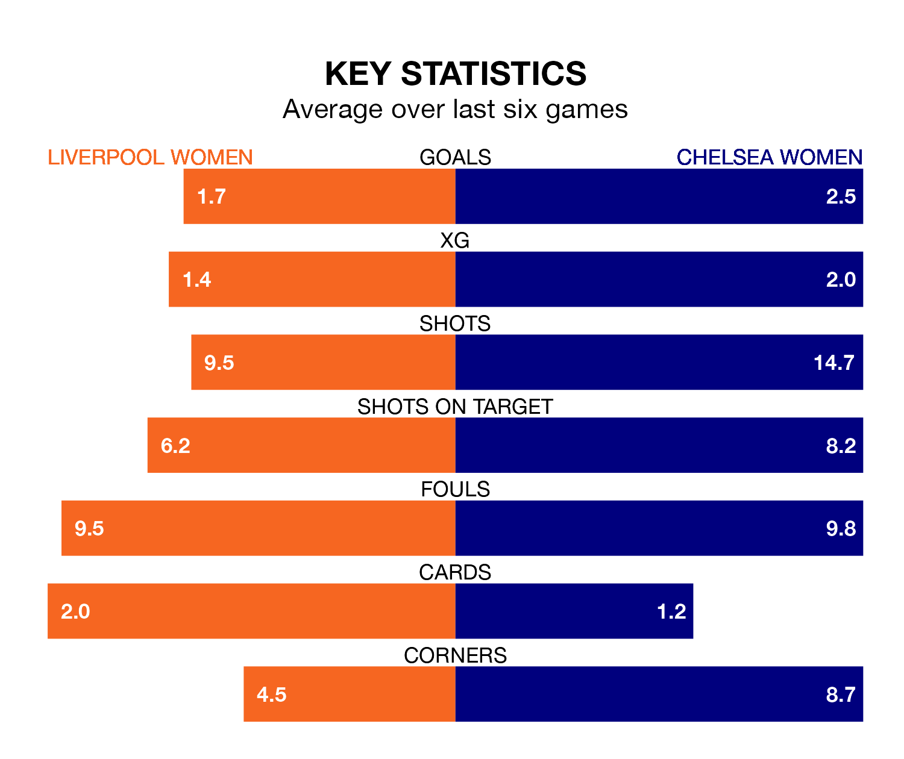

Two of the FA Women's Super League's meanest defences go head-to-head at Prenton Park on Wednesday, when Chelsea Women visit Liverpool Women.
Only one side – Manchester City Women – has conceded fewer goals than Chelsea to date: the away side have let in just 14 goals in 18 games.
Liverpool have conceded 25 goals in 19 games, giving them the joint-fourth tightest back line so far this season.
Key to the Blues' home form has been Hannah Hampton, who has allowed 0.33 goals past him per 90 minutes, compared to 1.21 for Rachael Laws in the opposite net.
Chelsea are second in the table after 18 games, of which they have won 15 and drawn one, earning 46 points.
Liverpool are three places behind the Blues in fifth, with nine wins and five draws putting them on 32 points.
In Lauren James, the visitors have one of the league's most on-form strikers so far this season. She has notched 13 goals in 15 appearances, to sit second in the scoring charts.
The home side's top scorers, with five goals each, are Marie Therese Höbinger and Sophie Roman Haug.
In the last 10 years, Liverpool and Chelsea have played each other on 18 occasions. Liverpool won two of them, Chelsea 15, and they drew once.
On average, Liverpool scored 0.9 goals and the Blues 2.8 in those matches.
Their last meeting was on November 18, when Chelsea won 5-1 at home.
Liverpool are in good form in the FA Women's Super League, with four wins and a draw from their last six games.
With five wins and one loss over that period, Chelsea's form is slightly better – they have taken 15 points from 18, compared to Liverpool's 13.
Liverpool's last match was on April 20, a 1-0 win against Bristol City Women, with Höbinger getting the goal for Liverpool.
Chelsea beat Aston Villa Women 3-0 last time out, on April 17, with Agnes Beever-Jones, Kadiesha Buchanan and Maika Hamano on the scoresheet.
Updated: 07:59 (UTC), 26/04/24